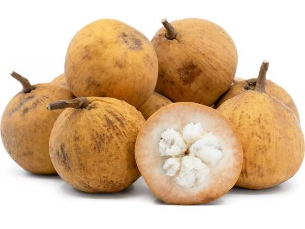

Sandoricum koetjape
Common Names: Sweet Santol, Cotton Fruit, Sentul, Kechapi, Lolly Fruit
Local Name: Santol (Filipino), Sentul (Malay), Kechapi (Indonesian)
Family: Meliaceae
Origin: Mainland Southeast Asia (Indochina, Malay Peninsula)
Plant Type: Perennial semi-deciduous to evergreen tree
Variety: Yellow (sweet) and Red (sour) varieties
Average Lifespan: 50–80 years
| Growth Habit | Large semi-deciduous tree with dense rounded canopy |
| Plant Size | 15–30 meters tall; canopy spread 10–15 meters |
| Leaves | Trifoliate (3 leaflets), each 10–20 cm long, turning yellow-red before dropping |
| Flowers | Small, greenish-yellow to pink, 5-petaled, in axillary panicles |
| Flower Characteristics | Fragrant; attract bees and insects; appear with new leaf flush |
| Fruit | Round, 5–8 cm diameter, velvety skin, cottony translucent pulp around 3–5 large seeds |
| Fruit Color | Yellow to golden-brown when ripe (sweet variety); reddish (sour variety) |
| Seed Characteristics | 3–5 large brown seeds surrounded by translucent sweet-sour pulp |
| Root System | Deep taproot with extensive lateral roots; wind-resistant |
| Climate | Tropical lowland; frost-intolerant; thrives in humid conditions |
| Temperature Range | 24–35°C ideal; does not tolerate temperatures below 5°C |
| Rainfall Requirement | 1500–3000 mm annually; tolerates seasonal dry periods |
| Soil Type | Deep, well-drained loamy to clay soil; adaptable |
| Soil pH Preference | 5.5–7.0 |
| Sun Requirement | Full sun (6+ hours daily) |
| Spacing | 8–12 meters between trees |
| Irrigation Method | Rain-fed in tropics; supplemental watering for young trees |
| Water Requirement | Moderate; drought-tolerant once established |
| Can it Grow in Pots? | Not recommended — grows very large |
| Fertilizer Schedule | 2–3 times per year; before and after fruiting |
| Recommended Organic Fertilizers | Compost, well-rotted manure, bone meal |
| Pesticide Frequency | Minimal; generally pest-resistant |
| Recommended Organic Pesticides | Neem oil, fruit fly traps |
| Mulching Practice | Organic mulch around base; self-mulching from leaf drop |
| Training System | Natural form; allow spreading canopy |
| Pruning Time | After harvest; during dormant period |
| How to Prune | Remove dead branches; thin canopy for light; control height if needed |
| Common Pests | Fruit fly, shoot borer, leaf miner |
| Common Diseases | Anthracnose, leaf spot, root rot |
| Disease Prevention & Remedies | Good drainage, remove fallen fruit, copper fungicide for anthracnose |
| Flowering Months | March–May (with new leaf flush) |
| Fruiting Season | July–October; heavy fruiting in rainy season |
| Days to Harvest | 90–120 days from flowering |
| Harvest Indicators | Fruit turns golden-yellow, slightly soft, aromatic; falls when fully ripe |
| Average Yield per Plant | 100–300 kg per tree per year (mature tree) |
| Pollination Type | Insect pollination |
| Pollination Notes | Bees are primary pollinators; cross-pollination improves yield |
| Pollination Details | Insect-pollinated; bees attracted to fragrant flowers |
| Propagation by Seeds | Fresh seeds germinate in 1–3 weeks; seedlings fruit in 5–7 years |
| Propagation by Cuttings | Air layering (marcotting) is preferred; roots in 6–10 weeks |
| Propagation by Grafting | Approach grafting for sweet varieties; fruits in 3–4 years |
| Water Usage | Moderate; drought-tolerant once established |
| Soil Conservation Practices | Large canopy prevents erosion; deep roots stabilize soil |
| Organic Practices Used | Minimal inputs; naturally hardy |
| Companion Plants | Banana, coconut, other tropical fruit trees |
| Biodiversity Benefits | Provides shade habitat; fruit attracts birds and bats |
| Commercial Production Regions | Philippines, Thailand, Malaysia, Indonesia, Cambodia |
| Market Uses | Fresh fruit, preserved fruit, timber |
| Processing Uses | Candied santol, jam, pickles, curries; wood used for furniture |
| Market Value (Approx.) | ₱30–80 per kg (Philippines); common market fruit |
| Symbolism | Popular fruit in Filipino and Thai culture; featured in traditional recipes |
| Traditional Uses | Fruit eaten fresh or in curries; bark and root used in traditional medicine for diarrhoea and fever |
| Calories | 88 kcal per 100g |
| Dietary Fiber | 1.5 g per 100g |
| Vitamin C | Moderate amounts |
| Vitamin A | Trace amounts |
| Iron | 0.4 mg per 100g |
| Potassium | Present |
| Antioxidants | Contains flavonoids and phenolic compounds |
| Other Key Nutrients | Calcium, phosphorus, carbohydrates |
| Anxiety & Sleep | Not a primary use |
| Immune Support | Vitamin C and antioxidants support immunity |
| Anti-inflammatory Properties | Bark and leaf extracts show anti-inflammatory activity in studies |
| Heart Health | Antioxidant content supports cardiovascular health |
| Digestive Health | Root and bark decoction used for diarrhoea and colic in traditional medicine |
Disclaimer: Information provided is for educational purposes only and not a substitute for medical advice.
Add your field observations here.